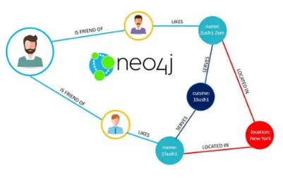
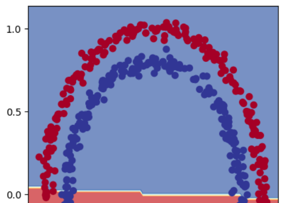

This project implements a Retrieval-Augmented Generation (RAG) chatbot designed as a learning assistant for candidates preparing for structured English language examinations, specifically the Nigerian JAMB English exam. The chatbot retrieves past questions from a knowledge base and provides accurate responses, explanations, and practice passages to enhance exam readiness.
This project is a simple yet powerful AI agent that can chat with users, search Wikipedia, and respond intelligently. It’s designed to show how real-world AI assistants work behind the scenes using tools, memory, and streaming responses..

This project focuses on building a Graph Database-powered Retrieval-Augmented Generation (RAG) chatbot. Instead of traditional keyword retrieval, the chatbot leverages knowledge graphs to perform context-aware reasoning, enabling it to answer complex, relational questions with higher accuracy.

I developed a repository containing multiple Jupyter Notebooks demonstrating deep learning workflows using PyTorch. The projects focus on building and training classification models, including binary and multiclass classification, as well as replicating a CNN architecture (TinyVGG) using Torchvision.
The Predicting Life Expectancy project explores the key socio-economic, health, and immunization factors that influence the average lifespan of populations across countries. Unlike past studies that focused on single-year data and limited variables, this project uses a multi-year dataset (2000–2015) and integrates critical features.